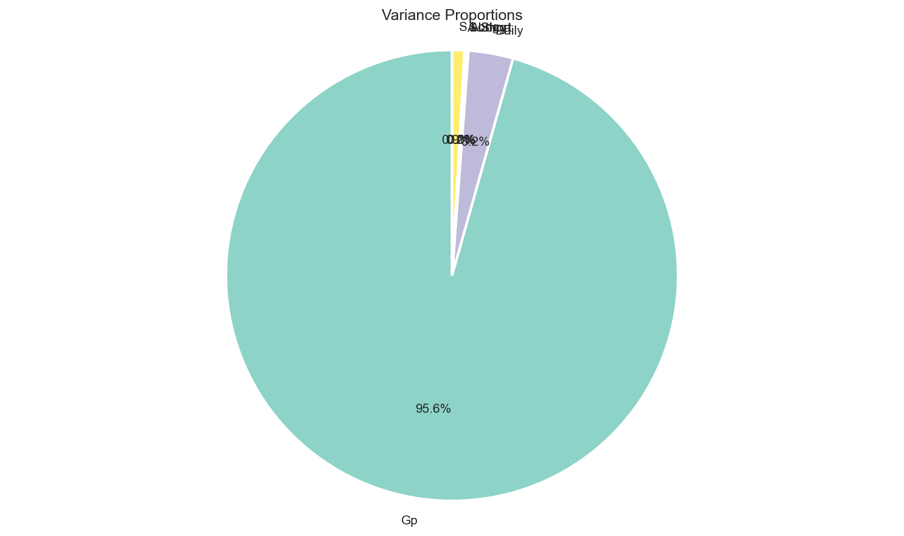
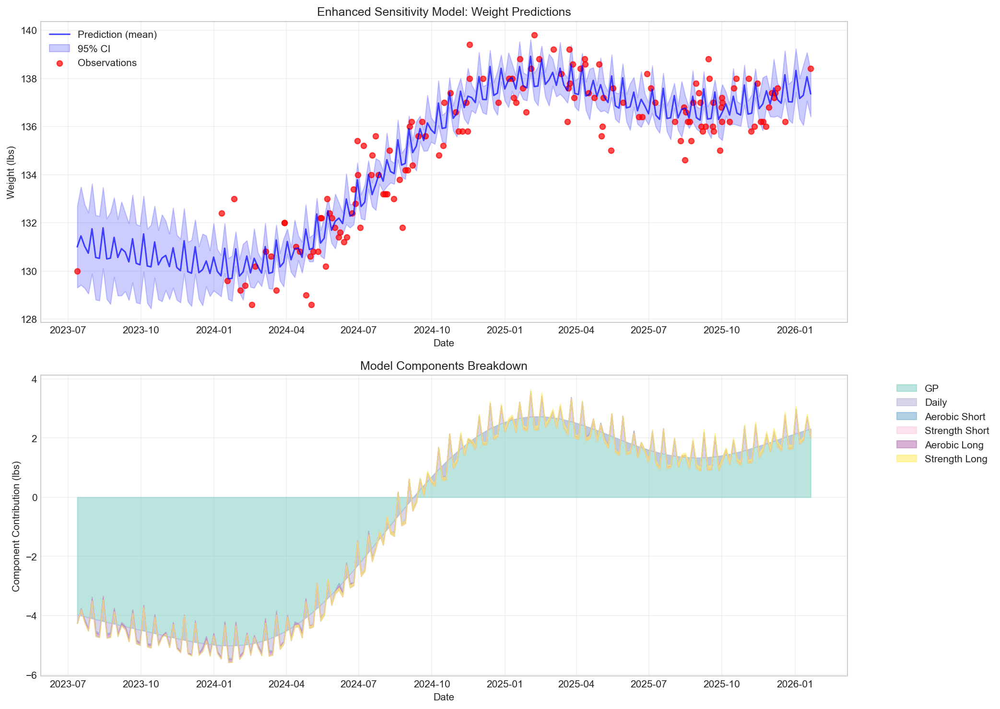

Comprehensive Report with Conservative Sampling and Smooth Predictions
Generated: 2026-03-02 12:32:16
alpha_gp = 0.760
→ EXCEEDS 0.5 constraint
GP needs more flexibility to capture trends
Posterior means and 94% highest density intervals from MCMC sampling with enhanced settings:
| Parameter | Description | Mean | Std | HDI 3% | HDI 97% | R-hat |
|---|---|---|---|---|---|---|
psi_a_short |
Aerobic short-term impulse decay | 0.3736 | 0.1836 | 0.0569 | 0.7112 | 1.0015 |
psi_s_short |
Strength short-term impulse decay | 0.3737 | 0.1834 | 0.0389 | 0.6969 | 1.0023 |
psi_a_long |
Aerobic long-term impulse decay | 0.6898 | 0.1761 | 0.3817 | 0.9971 | 1.0013 |
psi_s_long |
Strength long-term impulse decay | 0.6893 | 0.1764 | 0.3763 | 0.9987 | 1.0007 |
alpha_a_short |
Aerobic short-term fitness decay | 0.4951 | 0.1873 | 0.1647 | 0.8386 | 1.0000 |
alpha_s_short |
Strength short-term fitness decay | 0.4925 | 0.1858 | 0.1567 | 0.8282 | 1.0000 |
alpha_a_long |
Aerobic long-term fitness decay | 0.7292 | 0.1617 | 0.4515 | 0.9986 | 1.0031 |
alpha_s_long |
Strength long-term fitness decay | 0.7259 | 0.1655 | 0.4287 | 0.9987 | 1.0001 |
beta_a_short |
Aerobic short-term fitness gain per impulse | 0.0716 | 0.0800 | 0.0000 | 0.2041 | 1.0005 |
beta_s_short |
Strength short-term fitness gain per impulse | 0.0715 | 0.0817 | 0.0000 | 0.2062 | 1.0000 |
beta_a_long |
Aerobic long-term fitness gain per impulse | 0.0522 | 0.0654 | 0.0000 | 0.1497 | 1.0001 |
beta_s_long |
Strength long-term fitness gain per impulse | 0.0489 | 0.0541 | 0.0000 | 0.1413 | 1.0001 |
gamma_a_short |
Weight effect: aerobic short-term | -0.0305 | 0.1760 | -0.3539 | 0.3080 | 1.0003 |
gamma_s_short |
Weight effect: strength short-term | -0.0045 | 0.1700 | -0.3393 | 0.3112 | 1.0003 |
gamma_a_long |
Weight effect: aerobic long-term | -0.0363 | 0.0881 | -0.2004 | 0.1339 | 1.0006 |
gamma_s_long |
Weight effect: strength long-term | 0.0170 | 0.0872 | -0.1553 | 0.1803 | 1.0000 |
sigma_w |
Measurement noise (standardized) | 0.3582 | 0.0220 | 0.3195 | 0.4004 | 1.0006 |
alpha_gp |
GP amplitude parameter | 0.7601 | 0.0953 | 0.5899 | 0.9324 | 1.0010 |
rho_gp |
GP length scale | 0.1847 | 0.0306 | 0.1228 | 0.2372 | 1.0076 |
prop_variance_gp |
Proportion of variance from GP | 0.8323 | 0.0642 | 0.7982 | 0.8776 | 1.0022 |
prop_variance_daily |
Proportion of variance from daily cycle | 0.0278 | 0.0100 | 0.0097 | 0.0464 | 1.0013 |
prop_variance_a_short |
Proportion from aerobic short-term | 0.0005 | 0.0016 | 0.0000 | 0.0022 | 1.0001 |
prop_variance_s_short |
Proportion from strength short-term | 0.0004 | 0.0013 | 0.0000 | 0.0014 | 1.0004 |
prop_variance_a_long |
Proportion from aerobic long-term | 0.0015 | 0.0068 | 0.0000 | 0.0048 | 1.0008 |
prop_variance_s_long |
Proportion from strength long-term | 0.0077 | 0.0513 | 0.0000 | 0.0064 | 1.0017 |
half_life_a_short |
Half-life: aerobic short-term (days) | 1.2958 | 1.1292 | 0.2214 | 2.9413 | 1.0000 |
half_life_s_short |
Half-life: strength short-term (days) | 1.2932 | 1.3248 | 0.2385 | 2.8339 | 1.0000 |
half_life_a_long |
Half-life: aerobic long-term (days) | 5.1044 | 16.0226 | 0.2323 | 11.8926 | 1.0037 |
half_life_s_long |
Half-life: strength long-term (days) | 6.3166 | 27.1543 | 0.2730 | 12.5250 | 1.0006 |
Note: R-hat ≤ 1.1 indicates good convergence (green), R-hat > 1.1 indicates potential convergence issues (orange).
Proportion of weight variance explained by each model component:
| Component | Proportion | Interpretation |
|---|---|---|
| Gp | 0.832 (83.2%) | Long-term trends and slow changes |
| Daily | 0.028 (2.8%) | Daily weight fluctuations |
| A Short | 0.001 (0.1%) | Short-term aerobic effects |
| S Short | 0.000 (0.0%) | Short-term strength effects |
| A Long | 0.002 (0.1%) | Long-term aerobic effects |
| S Long | 0.008 (0.8%) | Long-term strength effects |

Visualization of variance proportions
The enhanced sensitivity model generates smooth predictions at 200 points across the time series:

Enhanced sensitivity model predictions with 95% credible intervals
| Parameter | Value | Purpose |
|---|---|---|
| adapt_delta | 0.99 | More conservative sampling, reduces divergent transitions |
| max_treedepth | 12 | Deeper exploration of posterior, better for complex models |
| warmup iterations | 1000 | Extended warmup for better adaptation |
| sampling iterations | 1000 | Sufficient samples for reliable inference |
| chains | 4 | Multiple chains for convergence diagnostics |
| prediction points | 200 | Dense grid for smooth predictions |
Enhanced Sensitivity Model Analysis Report
Generated on 2026-03-02 12:32:16 | Model: weight_state_space_four_fitness_sensitivity_pred.stan
Settings: adapt_delta=0.99, max_treedepth=12, 4 chains × (1000 warmup + 1000 sampling)
Enhanced Model Sensitivity Report Visualizations Time Series